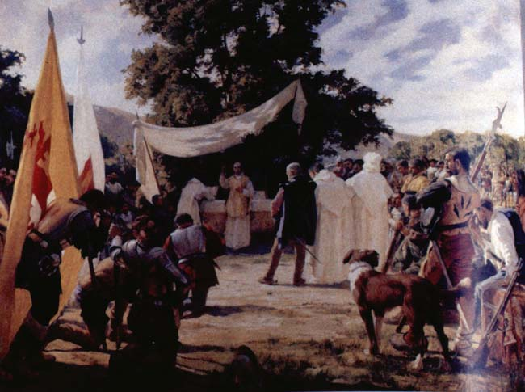

|
|  |
|
Pedro Subercaseaux, Primera misa en Chile
|
Meireles´s work initiated a genre of allegorical 'founding scenes' that foregrounded the 'first encounter' of the indigenous inhabitants with the Christian faith (rather than the conquest of the land) as an original moment of the nation – which could thus once again project its roots into a mythicised colonial past. Pedro Subercaseaux´s Chilean version, however, first exhibited at the Salon of 1904, is an all-white affair: the overall sensation is that of a hispanic hidalgo tradition transplanted onto American soil.
|